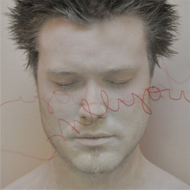

Still You. You Still hereEN DE
Terje Evensen has worked with artists like Nils Petter Molvær, Martin France and Tim Harries, but now for the first time, he has chosen to go solo:
»This album has come out of necessity. A strong expression within music and art, has always been important to me and I needed to explore the possibilities and see how far I could go.«
The album consists only of a few selected percussion instruments and electronics. In each song only one instrument has been used, the electronics are simply a manipulation of that same instrument; tweaked and treated to the unrecognisable.
The album will be for sale in high-fidelity quality on Bugge Wesseltofts new webshop, Gubemusic and also itunes, emusic etc
Still you. You still here
1. Unclaimed Consciousness
(Grandma’s old ceramic dish)
2. Beside space/next to
(Bowed cymbals & a sizzling snare)
3. Proletarian/In memory of persistence
(Rindik)
4. 1978
(Rindik & Wind gong)
5. Maintain/You’re the new museum
(Drum kit)
6. Wreck/Lights on-off
(Drum kit & a voice sample)
7. Before leaving
(Bao gong)

- netalbum: Still you. You still here
- Artist: Terje Evensen
- Duration: 35 min, 7 tracks
- Release date: June 14, 2010
Still you. You still here – Cover Art
{kind=link}
Press has said:
“Terje has a unique production style and an ear for pleasant surprises”
Chris Koff - Sound on Sound
”Terje Evensen is one of the brightest young jazz musicians I have heard for many years”
Graham Collier – Jazz changes
”Terje is very much a multi talented musician too who I met here in London. Not only is he a great drummer but he has other skills too, which mark him out as a very special musician to me.”
Martin France in an interview with Jazzwise Magazine
”Evensen is a sensitive player, and his contributions subtly reinforce some of the rhythmic aspects of the music without ever slipping into a flat-out groove.”
Brain Marley – The Wire
”This is nightmarish, futuristic ambient jazz, full of brooding throbs and clanking electronics courtesy of Norwegian programmer Terje Evensen.”
Kartan Mackness – Time Out
info
concept netalbum:
Ingvo Clauder & Lucas Dietrich